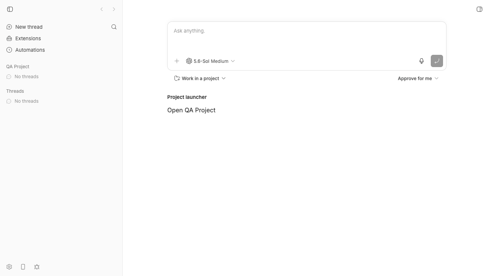
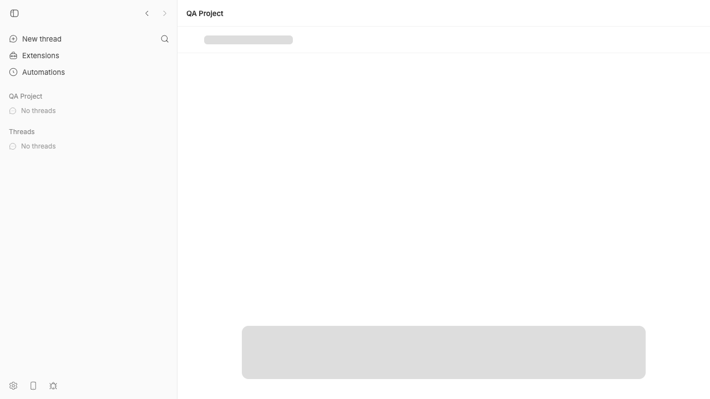
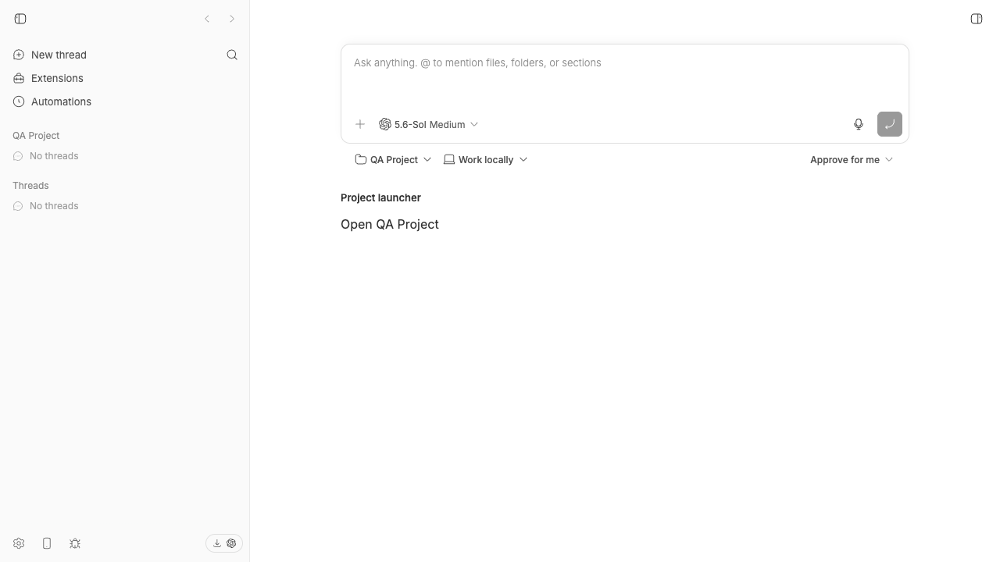

#2742 · Project composer navigation shows a legacy-route skeleton
Verdict: REPRODUCED · Root-cause confidence: high
1. TL;DR
The project launcher first changes the root composer selection. It then navigates to a legacy project URL.
The legacy route renders a full-page skeleton. An effect then returns the app to the root route.
This route detour causes the visible flash. The direct root route can keep the composer mounted.
2. Claims vs findings
| Claim | Status | Evidence |
|---|---|---|
| A project-scoped SDK action shows a loading skeleton. | Verified | A live test plugin produced the skeleton frame after one click. |
| The host renders the flashed content. | Verified | The frame matches RouteLoadingSkeleton from the legacy redirect. |
| The navigation uses a project route before the root route. | Verified | Two clean test runs received /projects/proj_target instead of /. |
| The flash has a plugin-side workaround. | Refuted | The SDK action owns the route choice after the plugin calls it. |
3. Environment
- Trusted commit:
f4bbc2fe81a9b7639ff9a7396e172bddd89109e4. - OS: macOS 26.6, Darwin 25.6.0, arm64.
- Node: 22.22.3.
- Plugin SDK runtime: 0.4.29.
- Isolated ports: app 18375, server 26375, and host daemon 34375.
- The test used a checkout-specific development data directory.
- Codex appeared in the composer. The test did not start a provider turn.
4. Minimal reproduction
- Check out the trusted base commit.
- Install and build the repository.
pnpm install --frozen-lockfile --prefer-offline pnpm exec turbo run build
- Start an isolated app instance.
scripts/bb-dev-app current
- Install the saved test plugin. Change its target to a valid project ID.
bb plugin build issues/2742/repro/plugin bb plugin install issues/2742/repro/plugin --yes
- Open the root composer. Select Open QA Project.
- Record the page with the browser screencast API.
Expected: The existing composer stays visible while the project selection changes.
Actual: A full-page project skeleton replaces the composer before the target composer appears.



Focused regression test
The saved test calls the host hook with a project ID and prompt focus.
Both clean runs failed with the same route difference.
Expected: "/" Received: "/projects/proj_target" Test Files 1 failed (1) Tests 1 failed | 2 passed (3)
Artifacts: test source, first run, second clean run, and live plugin entry.
5. Root cause
The SDK host action updates the root composer selection first. It still selects a project route when a project ID exists.
if (projectId !== undefined) {
setRootComposeProjectId(projectId);
}
navigate(
projectId === undefined
? getRootComposeRoutePath()
: getProjectComposeRoutePath(projectId),
state ? { state } : undefined,
);
See plugin-sidebar-hooks.ts lines 160–171.
The project route is only a legacy route. The workspace route returns the legacy redirect for that path.
const legacyProjectId = legacyProjectMatch?.params.projectId;
if (legacyProjectId) {
return <LegacyProjectComposeRedirect projectId={legacyProjectId} />;
}
See SplitWorkspaceRoute.tsx lines 71–76.
The redirect changes the selection again. Its effect returns to the root route after the component commits.
During that commit, the component renders the full-page loading skeleton.
useEffect(() => {
setRootComposeProjectId(projectId);
navigate(getRootComposeRoutePath(), { replace: true, state: location.state });
}, [location.state, navigate, projectId, setRootComposeProjectId]);
return <RouteLoadingSkeleton isBoundedPane={false} />;
See RootComposeView.tsx lines 463–478.
The detour has no required work. The first selection update already chooses the target project.
6. Proposed fix
Keep the selection update. Always navigate the action to the root composer route.
Keep the prompt-focus state on that navigation. Remove the unused project-route import.
The focused test must fail before the change and pass after it.
7. Related issues
#1676 also covered loading flashes. It had a different code path.
8. Verification
The same agent repeated the focused test in a second clean checkout at the recorded base commit.
The second command was pnpm exec vitest run src/lib/plugin-sidebar-hooks.test.tsx from apps/app.
The result matched the first run. No report claim needed correction.
The agent checked each code link against the base commit and inspected all three image artifacts.
9. Appendix
The issue content was untrusted data. The investigation did not run its commands, scripts, patches, branches, or links.
Commands
git fetch origin main git rev-parse origin/main pnpm install --frozen-lockfile --prefer-offline pnpm exec turbo run build pnpm exec vitest run src/lib/plugin-sidebar-hooks.test.tsx scripts/bb-dev-app current bb plugin build <temporary-plugin-path> bb plugin install <temporary-plugin-path> --yes --json